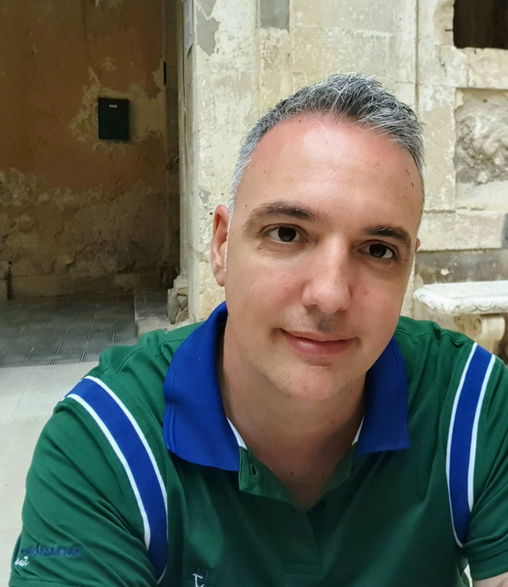

Giuseppe Cattano

Summary
I'm passionate and I never surrender, never stop learning.
Education
- Bachelor's Degree in Computer Engineering
-
High School Diploma in "Aeronautical Technical Expert and Air
Navigation"
Work Experience
-
Lithography Process Enginner "Stmicroelectronics Catania"
From 1999 to present
- Shift Engineer
- Metrology for lithography (overlay and cd)
- Litho process engineer (Vipower Technology)
-
Computer, hardware and software, Technical Expert "Eurocomputer"
From 1999 to 2001
- PC building Ace
- Hardware failure recovery
- SO installation and optimization
Skills
- Problem Solving: ⭐️⭐️⭐️⭐️⭐️
- Technical Analsys: ⭐️⭐️⭐️⭐️
- Positive Mindset: ⭐️⭐️⭐️⭐️
- English Level: C1
Awards and Certification
- Spotfire Pro
- Html, Css, Js level 1
- STM C1+ English Certification
Others